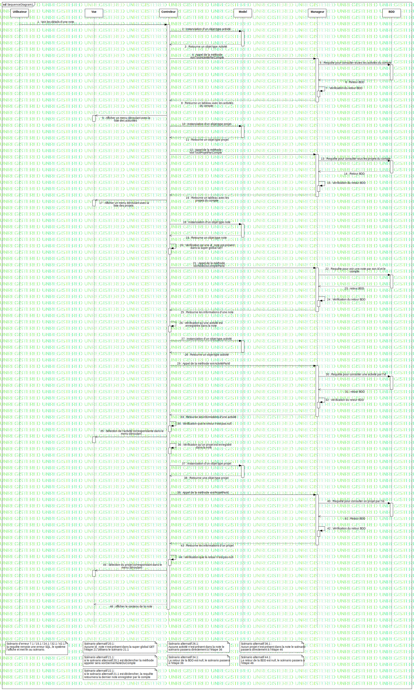

Interaction1
UMLInteraction
Untitled
::
Note
::
SeqD voir les détails d'une note
::
Interaction1
Description
none
Diagrams

SequenceDiagram1
Participants
Utilisateur
Vue
Controleur
Model
Manageur
BDD
Messages
Voir les détails d'une note (Utilisateur→Controleur)
instanciation d'un objet type activité (Controleur→Model)
Retourne un objet type Activité (Model→Controleur)
Appel de la méthode voirToutActivitéParCompte (Controleur→Manageur)
Requête pour consulter toutes les activités du compte (Manageur→BDD)
Retour BDD (BDD→Manageur)
Vérification du retour BDD (Manageur→Manageur)
Retourne un tableau avec les activités du compte (Manageur→Controleur)
Afficher un menu déroulant avec la liste des actiuvités (Controleur→Vue)
Instanciation d'un objet type projet (Controleur→Model)
Retourne un objet type projet (Model→Controleur)
Appel de la méthode VoirToutProjetParCompte (Controleur→Manageur)
Requête pour consulter tous les projets du compte (Manageur→BDD)
Retour BDD (BDD→Manageur)
Vérification du retour BDD (Manageur→Manageur)
Retourne un tableau avec les projets du compte (Manageur→Controleur)
Afficher un menu déroulant avec la liste des projets (Controleur→Vue)
instanciation d'un objet type note (Controleur→Model)
Retourne un objet type note (Model→Controleur)
Vérification qu'une id_note est présent dans la super global GET (Controleur→Controleur)
Appel de la méthode voirNoteDuCompteParId (Controleur→Manageur)
Requête pour voir une note par son id et le compte (Manageur→BDD)
retour BDD (BDD→Manageur)
Vérification du retour BDD (Manageur→Manageur)
Retourne les informations d'une note (Manageur→Controleur)
Vérification qu'une activité est enregistrée dans la note (Controleur→Controleur)
instanciation d'un objet type activité (Controleur→Model)
Retourne un objet type activité (Model→Controleur)
Appel de la méthode voirActivitéParId (Controleur→Manageur)
Requête pour consulter une activité par l'id (Manageur→BDD)
retour BDD (BDD→Manageur)
Vérification du retour BDD (Manageur→Manageur)
Retourne les informations d'une activité (Manageur→Controleur)
Vérification que le retour n'est pas null (Controleur→Controleur)
Sélection de l'activité correspondante dans le menu déroulant (Controleur→Vue)
Vérification qu'un projet est enregistré dans la note (Controleur→Controleur)
Instanciation d'un objet type projet (Controleur→Model)
Retourne une objet type projet (Model→Controleur)
Appel de la méthode voirProjetParId (Controleur→Manageur)
Requête pour consulter un projet par l'id (Manageur→BDD)
Retour BDD (BDD→Manageur)
Vérification du retour BDD (Manageur→Manageur)
Retourne les informations d'un projet (Manageur→Controleur)
Vérification que le retour n'est pas null (Controleur→Controleur)
Sélection du projet correspondant dans le menu déroulant (Controleur→Vue)
Afficher le contenu de la note (Controleur→Vue)
Properties
Name
Value
name
Interaction1
stereotype
null
visibility
public
isReentrant
true
Owned Elements
SequenceDiagram1